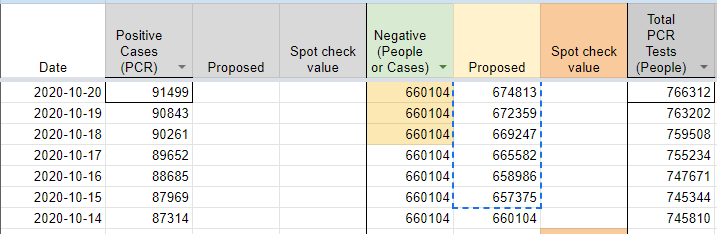
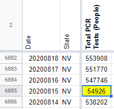
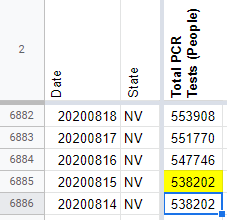
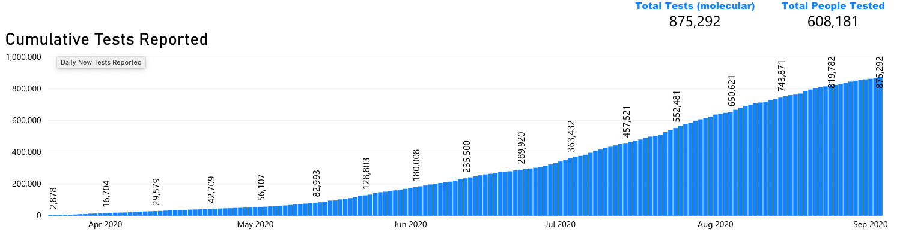
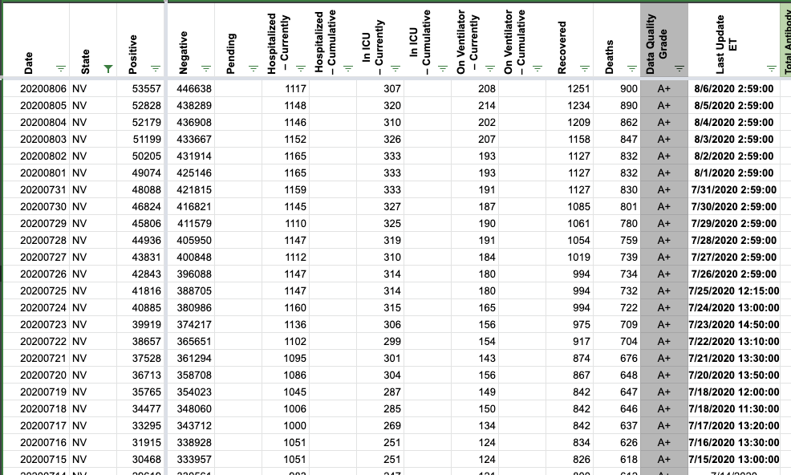
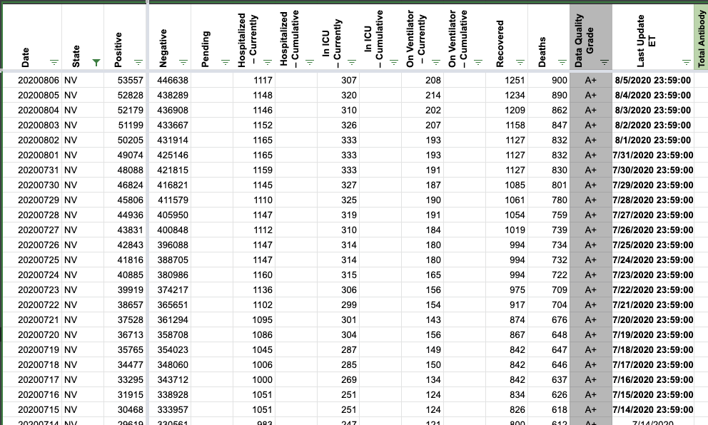
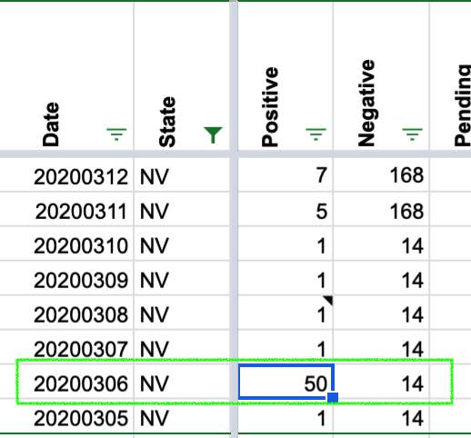
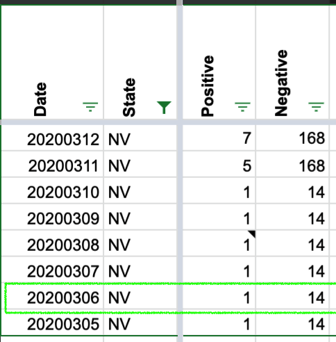
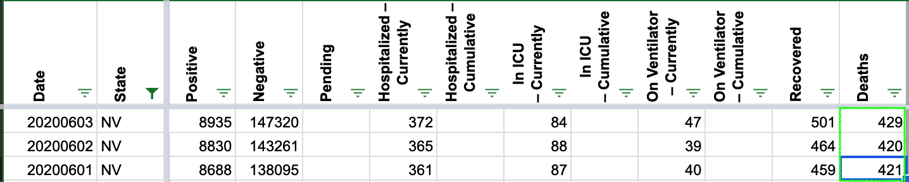
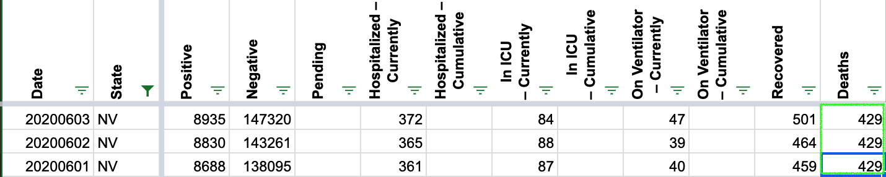

#1044: [NV] Remove values carried over after Nevada stopped reporting Total tests (in specimens)
Issue number 1044
jaclyde opened this issue on January 4, 2021, 6:47 PM PST
Labels Data quality not stale
State: Nevada
Issue: On October 15th, 2020 Nevada stopped reporting Total tests (in specimens) and began reporting Total tests (in test encounters). We carried over the last available value, but the metric has not returned, so the value is out of date and potentially confusing. We will be keeping the time series as provided by the state, but removing the carried over values from October 15, 2020, forward.
Comments
- [X] make GH issue
- [X] double check the metrics aren't being reported somewhere by the state
- [X] add public note
- [x] remove carried over values
- [x] add chart annotation
- [x] null out source notes
- [x] null out WS2 values
- [x] revisit public note
Values removed: Changes.txt
#962: [NV] Remove recoveries timeseries
Issue number 962
muamichali opened this issue on November 19, 2020, 10:49 AM PST
Labels Data quality
State or US: Nevada
Describe the problem The timeseries we capture for recoveries in Nevada is a very small subset of recoveries in the state. The state does not report recoveries so we should remove this timeseries.
Link to data source https://app.powerbigov.us/view?r=eyJrIjoiNDMwMDI0YmQtNmUyYS00ZmFjLWI0MGItZDM0OTY1Y2Y0YzNhIiwidCI6ImU0YTM0MGU2LWI4OWUtNGU2OC04ZWFhLTE1NDRkMjcwMzk4MCJ9
Comments
#919: [NV]Backfill total test encounters from state data
Issue number 919
muamichali opened this issue on October 30, 2020, 11:20 AM PDT
Labels Data quality
State or US: Nevada
Describe the problem On 10/15 Nevada switched their reporting from Total Tests (PCR) to Total Test Encounters (PCR) and the full time series of the new unit is available on their dashboard, and can be accessed via the PowerBI source code.
Link to data source https://app.powerbigov.us/view?r=eyJrIjoiMjA2ZThiOWUtM2FlNS00MGY5LWFmYjUtNmQwNTQ3Nzg5N2I2IiwidCI6ImU0YTM0MGU2LWI4OWUtNGU2OC04ZWFhLTE1NDRkMjcwMzk4MCJ9&pageName=ReportSection713122d051caa3096e41

*The first day of data is set as 32 tests with a 23 constant added to match the totals on the dashboard perfectly.
Comments
We backfilled our Total Test Encounters (PCR) for Nevada using the data behind the dashboard above. Attached are the analysis and raw data sheets used during this backfill.
NV - Analysis PCR Encounters 20201029.csv.txt NV - Sheet12.csv.txt
#907: [NV]Backfill calculated negatives to match positive and totals from 10/15-10/20
Issue number 907
muamichali opened this issue on October 21, 2020, 5:04 AM PDT
Labels Backfill Data quality
State or US: Nevada
Describe the problem On 10/15 the Nevada dashboard was updated and one of the testing reporting numbers was no longer reporting. When the updates to data entry procedure were made, the capture of the negatives field was paused because the negatives were no longer directly reported. Since the total test numbers in Nevada are calculated by positive+negative this caused the main test number for Nevada to freeze. This backfills the negatives by calculating them from directly reported totals and positives.
Link to data source

Comments

#903: [NV] Backfill Nevada's Total Test Encounters PCR for 10/15 from dashboard screenshot
Issue number 903
muamichali opened this issue on October 20, 2020, 7:31 AM PDT
Labels Data quality
State or US: Nevada
Describe the problem Nevada's dashboard changed on 10/15 and we did not enter this value.
Link to data source
Provide links to original data sources that we can refer to, like a state COVID website.

Comments
#768: [NV] Total PCR Tests (People) input incorrectly on 8/15
Issue number 768
brianskli opened this issue on August 16, 2020, 12:46 PM PDT
Labels Historical Data not stale
State or US: Nevada
Describe the problem A digit was missed while inputting Total PCR Tests (People) on 8/15, resulting in underreporting. This value should be edited in States Daily.
Link to data source https://app.powerbigov.us/view?r=eyJrIjoiMjA2ZThiOWUtM2FlNS00MGY5LWFmYjUtNmQwNTQ3Nzg5N2I2IiwidCI6ImU0YTM0MGU2LWI4OWUtNGU2OC04ZWFhLTE1NDRkMjcwMzk4MCJ9
Comments
This issue is complicated by the fact that we do not have a screenshot or reliably historical source for Total PCR Tests (People), normally found on p.3 of the dashboard
Since we do not have a reliable source from which to backfill this value, we are carrying over the testing value from 8/14 (538202).
BEFORE: 
AFTER: 
#719: [NV] PCL Cases Historicals
Issue number 719
the-daniel-lin opened this issue on July 31, 2020, 7:02 PM PDT
Labels Backfill Historical Data not stale
State or US: Nevada
Describe the problem Our Positive Cases (PCR) column only goes back to 4/29. The NV dashboard, on the 5th slide, has a hover-over graph that reports "Cumulative Cases" dating back to 3/4. These values match up with the 'Confirmed Cases' value on the first slide.
*** Note: I noticed two discrepancies between States Daily and NV's chart for 6/25-6/26 (there may be more ?). Our States Daily values match with state screenshots. However, these discrepancies seem to be outliers, as the several other dates I checked throughout the four months all aligned with confirmed values.
Link to data source https://app.powerbigov.us/view?r=eyJrIjoiMjA2ZThiOWUtM2FlNS00MGY5LWFmYjUtNmQwNTQ3Nzg5N2I2IiwidCI6ImU0YTM0MGU2LWI4OWUtNGU2OC04ZWFhLTE1NDRkMjcwMzk4MCJ9
Graph looks like this:

Comments
There are a number of discrepancies but they all seem to be human error, e.g. transposing digits and such. Based on screenshots, the error seems to have been with the state and not with our data entry team. Since these were mistake corrections by the state instead of continuously revised data, the backfill team agreed we can pull them in.
In addition to the chart Daniel screenshotted, on the previous page the dashboard has data for total tests that similarly matches our data for total tests (PCR) except with a few corrections and going back into March.

The result is three updated columns: positive cases (PCR), positives, and total tests (PCR). (Our positives for NV are identical to positive cases.) Our positive cases (PCR) now extends back to 3/5 as a result of this backfill. Total tests (PCR) now extends back to 3/22 (formerly it ended at 4/29).
Spreadsheet with analysis and before/after data: https://docs.google.com/spreadsheets/d/1QLtUsLbO0HZ4xQQJlVGzf9nbmc31QVy9lqp1sNaZs7s/edit#gid=0
#678: [NV] Patch timestamps through 7/16 *Low Priority*
Issue number 678
hmhoffman opened this issue on July 26, 2020, 1:15 PM PDT
Labels Backfill Historical Data
Describe the Issue: On 7/26, we switched from using the site update timestamp to the "data through" timestamp for Nevada at 23:59 of the previous date. Both timestamps have been available since 7/16, so we should patch the timestamps until present. See https://covid-tracking.slack.com/archives/CUQ4MMTPD/p1595793116050800 for full thread with discussion of process change.
Data Source: https://app.powerbigov.us/view?r=eyJrIjoiMjA2ZThiOWUtM2FlNS00MGY5LWFmYjUtNmQwNTQ3Nzg5N2I2IiwidCI6ImU0YTM0MGU2LWI4OWUtNGU2OC04ZWFhLTE1NDRkMjcwMzk4MCJ9
Comments
The 23:59 timestamp was found to be relevant through 7/15. States Daily was changed accordingly to account for current timestamp practices.
Before: 
After: 
#608: [NV] Revise Unique People Tested Numbers based on info from NV
Issue number 608
muamichali opened this issue on July 12, 2020, 8:26 PM PDT
Labels Data quality Missing Data stale
State or US: Nevada
Describe the problem [A clear and concise description of what the data problem is.](url COVID-19 Cumulative Unique People Tested by Date.xlsx )
Link to data source Provide links to original data sources that we can refer to, like a state COVID website.
Comments
This issue has been automatically marked as stale because it has not had recent activity. It will be closed if no further activity occurs. Thank you for your contributions!
This issue has been closed because it was stale for 15 days, and there was no further activity on it for 10 days. You can feel free to re-open it if the issue is important, and label it as "not stale."
#532: [NV] PCL Historicals and WS2
Issue number 532
the-daniel-lin opened this issue on June 25, 2020, 7:51 AM PDT
Labels PCL/SVP Historicals
Death values are historically recorded in both the "Deaths" and "Deaths (Confirmed)" columns for NV. However, NV's death values represent lumped probable and confirmed figures, so they should only be recorded in the main "Deaths" field.
Comments
Confirmed they were identical to "Deaths", then removed "Deaths (confirmed)" from today back through 5/12.
Updated NV's source note for Deaths (confirmed) to Not Provided and explained in NV private notes
DC'ed by JJA 6/26 9:44:00 a.m. ET
#499: Update NV historical time series for cumulative deaths
Issue number 499
camille-le opened this issue on June 18, 2020, 7:24 AM PDT
Labels Data quality
State or US: Nevada
Describe the problem This GitHub issue is filed to request updating the time series for cumulative deaths.
Context: NV publishes Daily/Weekly Situation Reports which include time series charts of tests performed, cases, cumulative deaths and additional data.
Observation: From the June 4 report, the time series for cumulative deaths shows a higher count than what is currently reported from CTP:

Examples:
| Date | NV Situation Report | CTP |
|---|---|---|
| ... | ||
| 5/31 | 428 | 417 |
| 5/30 | 426 | 417 |
| 5/29 | 425 | 410 |
| ... |
Link to data source
- Daily/Weekly Situation Reports: https://nvhealthresponse.nv.gov/news-resources/daily-situation-reports/
- June 4 Situation Report: https://nvhealthresponse.nv.gov/wp-content/uploads/2020/06/06.4.20-Daily-SitRep-final.pdf
Comments
This looks like a screenshot from the dashboard (page5). At least there's no need to copy numbers from PDFs. Here's the CSV version, that I took from the dashboard nv_deaths_cumsum.zip
Nevada looks like they revise historicals to account for reporting lags and such; the curves for cases and deaths on their dashboard (you can right click and view as table) don't match ours until the current day. (edit: the total tests curve on the other hand does match ours, just offset by one day)
Small adjustment to what I said: they only revise historical deaths.
Cases and total tests are mostly offset by one day because of when we update. There are some small differences in cases, especially back in March, but I don't think correcting minor errors is worth the "bubble" (one day with double cases) it will introduce, because it corrects the off-by-one effect for the data that exists only to have future data entry shifts reintroduce it.
So: I've updated deaths all the way back and the confirmed deaths column. These were fairly off from what we had because of the revisions. For example, in between 19 June and today, they added a new death back in early May! Data and analysis here: https://docs.google.com/spreadsheets/d/10jJ5Fq9M6CamVAELZK2dfendTMYfJy5bEZMFdEsuBf0/edit#gid=0
#493: [NV Historicals Error]
Issue number 493
muamichali opened this issue on June 14, 2020, 9:52 AM PDT
Labels Data quality
Two errors in your NV data.
First, there's a random 50 that appears where there should be a 1 in the cumulative positive cases... taking your daily.csv file and pulling out the NV data, see these rows:
... 20200305 NV 1 20200306 NV 50 20200307 NV 1 ...
Second, there is a cumulative death error where an error seems to have slipped in, then was subsequently corrected, but this wasn't back-corrected in the cumulative totals.
Here are the deaths for NV around June 1st. Note the 421 DOWN to 420 error... ... 417 2020-05-30T10:30:00Z 417 2020-05-31T11:30:00Z 421 2020-06-01T11:00:00Z 420 2020-06-01T00:00:00Z
Comments
Hey Michal, Thank you for writing. We've updated the data for cumulative positive cases for March 6, 2020.
BEFORE: 
AFTER: 
We have also updated the data for cumulative deaths for June 1 and June 2, 2020 as reported by the Nevada Health Response team on June 4. BEFORE: 
AFTER: 
#195: NV: Daily Situation April 14 hospitalizations: 340 confirmed patients in hospitals
Issue number 195
catawbasam opened this issue on April 14, 2020, 8:15 PM PDT
Labels stale
https://nvhealthresponse.nv.gov/news-resources/daily-situation-reports/
April 14 report p. 4 has health system statistics, including "340 confirmed covid-19 patients in hospitals, statewide" https://nvhealthresponse.nv.gov/wp-content/uploads/2020/04/4.14.20-Daily-SitRep.pdf
Comments
This issue has been automatically marked as stale because it has not had recent activity. It will be closed if no further activity occurs. Thank you for your contributions!
This issue has been closed because it was stale for 15 days, and there was no further activity on it for 10 days. You can feel free to re-open it if the issue is important, and label it as "not stale."
#56: NV: Negative pending values
Issue number 56
careeningspace opened this issue on March 26, 2020, 6:34 AM PDT
Labels Data quality
Nevada
- [ ] Pending data for Nevada is very inconsistent. We do have a strange negative value on 3/20

- [ ] Need some input to resolve our thinking

@jdmaresco @hammer
Comments
#41: AK, DC, ID, MI, NY, NV have non-cumulative results
Issue number 41
nickblink opened this issue on March 23, 2020, 4:43 AM PDT
Labels Data quality stale
For DC and NV, there is a day when positive tests decrease from the previous day. For the other four states, there are days when negative tests decrease.
Thanks for putting this together!
Comments
Uploading a spreadsheet of all decreases (more than documented previously), current as of today: covidtracking_problemdates.xlsx
States affected: AK, AL, AZ, CO, DC, DE, FL, HI, IA, KS, MA, MD, MI, NJ, NM, NV, NY, OH, OK, PR, RI, SC, WI
This is my R code to calculate new cases and pull records that decreased from the prior day (any variable) AND the prior day's row for comparison:
library(tidyverse)
covidtracking %>%
arrange(state, date) %>%
group_by(state) %>%
mutate_at(vars(c("positive", "death", "total")),
list(new = ~ coalesce(. - lag(.), .))) %>%
filter_at(vars(ends_with("new")), any_vars(. < 0 | lead(.) < 0)) %>%
ungroup()
I wonder if the problem is an error in the data source in which corrections for prior day results are included as adjustments on the day the error was discovered. This is common in the banking world because of the value of keeping past transactions immutable. It's poor practice for scientific data, however, because the test counts on a given day matter.
If the problem is deferred adjustment, the idea solution is to inform the data sources and ask for better quality data. Short of that, an corrective approach is to reverse the error to the best extent that the data allows: Where a daily result is negative, set that day to zero, and decrease the count of the previous day by the corresponding amount.
Such a correction would not be perfect since (a) you don't know for sure whether the error was from the previous day versus earlier and (b) it doesn't correct any of the cases where adjustments didn't cause negative result. Still, it leads to better data quality than making no correction and avoids the confusion of negative daily counts.
Hello, and thank you for helping us clean our data. Please see the following:
New York:
- [ ] 3/7 to 3/8 the total changed due to pending tests no longer being reported.
- [ ] 3/10 to 3/11 should be correct

Oklahoma
- [ ] 3/20 to 3/21 the variance in totals is tied to the unreliable Pending category. It may be that the data point was phased out and our data was affected by this transition;
Ohio
- [ ] 3/16 to 3/17 variation in data is due to Pending data no longer being published.

New Jersey
- [ ] 3/16 is infact incorrect:

- [ ] corrected

Hawaii
- [ ] Pending for 3/19 decrease per the state

Michigan stopped reporting pending data as of 3/17
Kansas stopped reporting pending data as of 3/11

Iowa stopped reporting pending data as of 3/14
Deleware stopped reporting pending data as of 3/17
DC has fluctuating pending data

Thank you for these clarifications, @careeningspace, and for working on providing these data so accessibly! In terms of cleaning up these records for use:
- Has the NJ correction been applied to the live data?
- Given the inconsistencies with pending data, do you foresee any problems with subtracting pending cases from the totals?
The NJ correction should be in the live feed. Going forward, our API will no longer be focusing on including Pending in our "Total". You can find more detail on our API Page
- [ ] totalTestResults - Calculated value (positive + negative) of total test results.
- [ ] total - DEPRECATED Will be removed in the future. (positive + negative + pending). Pending has been an unstable value and should not count in any totals.
As for subtracting historical "Pending" data - if you want a clean Total, you can sum Positive and Negative.
Great, thanks. That fixes problems in many states and leaves only AK, DC, HI, ID, KY, MI, NV, and SC with negative "increases": covidtracking_problemdates.xlsx
covidtracking %>% arrange(state, date) %>% group_by(state) %>% filter_at(vars(ends_with("Increase")), any_vars(. < 0 | lead(.) < 0)) %>% ungroup()
-[ ] Alaska has a period of data flux that needs more research 3/17 - 3/19:
Data Log:

Daily Report:

State Data from 3/17 14:09 ET:

State Data from 3/17 18:00 ET:

State Data from 3/18:

Updated Daily after correction:

District of Columbia 3/10 - 3/11
- [ ] We do not have screen grabs from this time period
- [ ] It looks like DC changed how they were reporting data. I am going to make both days match
DC Before update:

DC after update:

-
[ ] ID has an issue with a change in data from 3/18 to 3/19

-
[ ] Screen cap of State Data from 3/18 14:04:

-
[ ] Screencap of State Data from 3/19 14:04:

-
[ ] The positives increase, while the total tests reported did not. Our methodology is to leave the negatives unchanged in this case. Fixed data below:

This issue has been automatically marked as stale because it has not had recent activity. It will be closed if no further activity occurs. Thank you for your contributions!
This issue has been closed because it was stale for 15 days, and there was no further activity on it for 10 days. You can feel free to re-open it if the issue is important, and label it as "not stale."